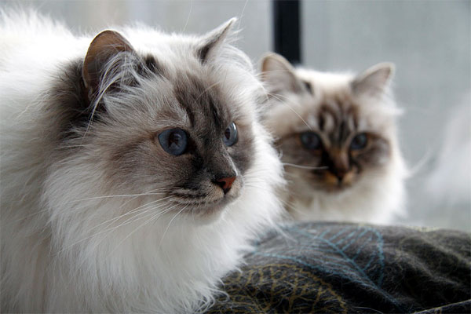
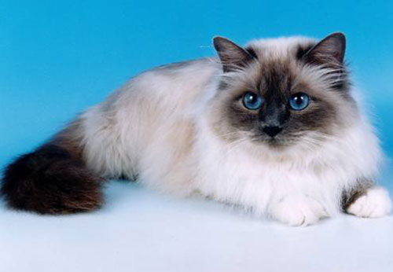

Уход за Бирмой
Чтобы в полной мере представить себе уход за котятами бирмы, надо знать, в чем заключается уход за бирманскими котами. Особого ухода за этими котами не нужно, но следить за ними надо все равно.
Они могут болеть также, как и люди. Причем, интересен тот факт, что многие болезни передаются у них по наследству.
Шерсть у бирманских кошек длинная, она требует расчесывания до двух раз в неделю. У бирманских кошек бывают периоды линьки. В такие периоды их надо расчесывать по нескольку раз в день. Используйте щетку с натуральным ворсом или шелковым. Конечно, нельзя забывать и о прививках и дегельминтизации.
Купать кошку можно раз в полгода. Этого будет вполне достаточно,
если Вы не гуляете с ней на улице часто. Если же Вы гуляете с ней часто, то купайте ее раз в месяц,
мойте ей лапки после каждой прогулки.
Уход за бирманскими котятами толком ничем не отличается от ухода за взрослой кошкой.
На первых порах уход проще в том плане, что большую часть ухода на себя берет кошка.
Так или иначе, теперь Вы имеете представление о том как ухаживать за бирманской кошкой.


КОШКИН ДОМ